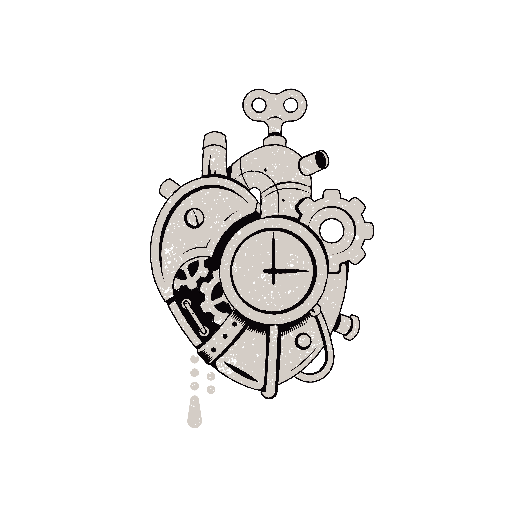
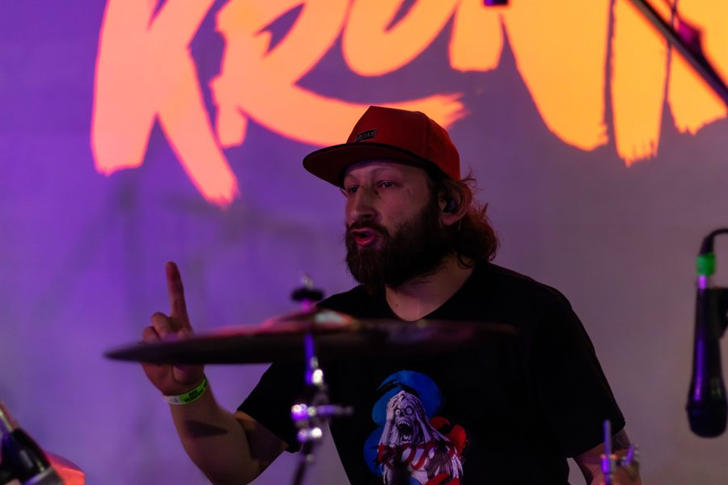
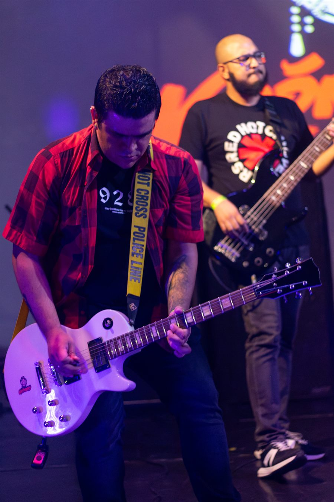
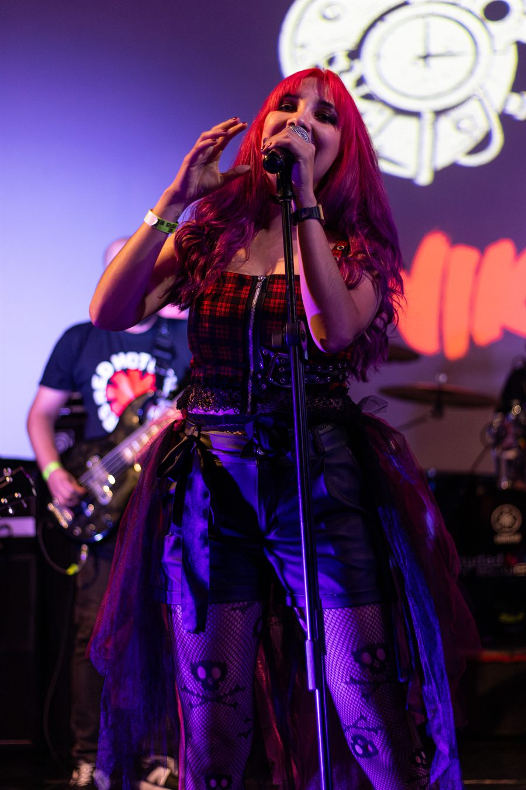
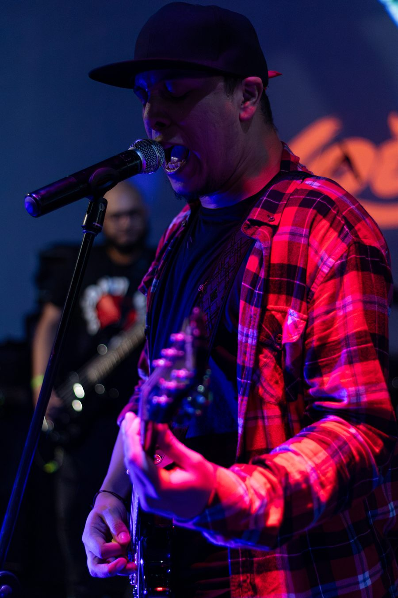
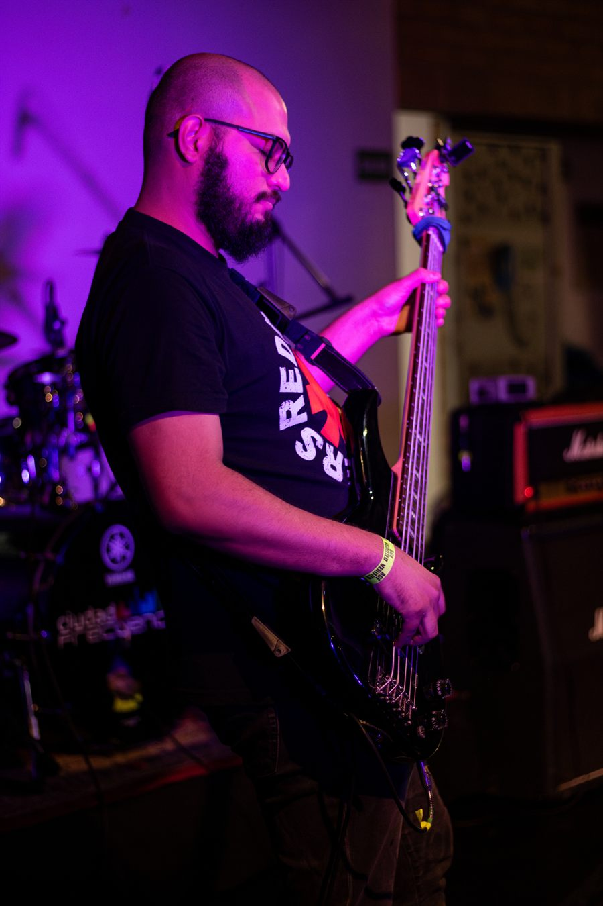

KRÓNIKASKrónikas es una banda de Punk Rock y Pop Punk de la ciudad de Medellín, que trabaja desde el 2012 con un estilo musical basado en ritmos rápidos y alegres que invitan a festejar, a disfrutar de la vida y a canalizar las oscuridades personales.
Sus letras cuentan historias que evocan la amistad, un grito de esperanza ante las injusticias y el día a día de cualquier joven rockero deambulante de Medellín.
Lo que comenzó como un parche de amigos de barrio, con autogestión y toques en bares, ha ido creciendo en calidad de ejecución y sonido para crear un estilo más sobrio y cada vez más profesional. Esto ha permitido hacer parte de diferentes escenarios y festivales en Medellín, además de invitaciones a eventos fuera de la ciudad.
Porque para nosotros cada canción es una crónica y cada crónica es una canción. ¡Yeah!




